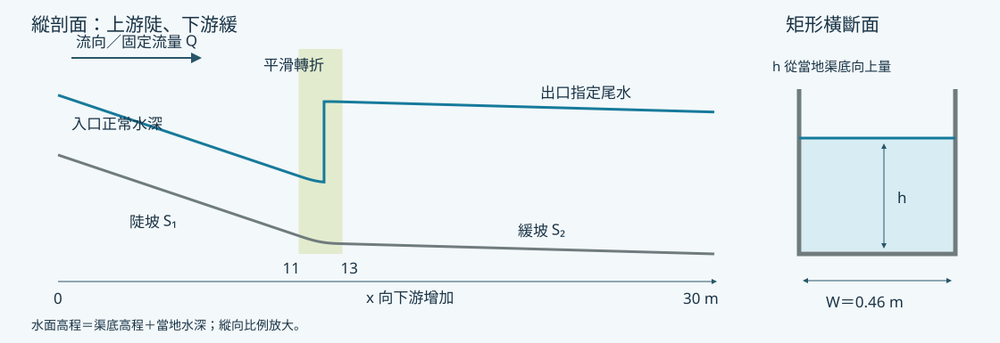

第一組 · A1–A5
水躍之深度平均模擬
Python標準步法 · Saint-Venant · Boussinesq型
比較水面、水躍位置與波動，檢查網格、時間步及數值耗散的影響。B波形是否穩定是研究問題。
Undergraduate Research · Slope Channel
在同一條陡坡轉緩坡的矩形渠道，先完成 P0 基準，再研究一個物理因子的影響。教師提供程式，學生設定案例、計算、製圖與解釋。
已完成 GC1991 的 Windows／WSL 可沿用；下載後依接續安裝頁完成 P0。

01 / Read · Run · Explain
講義說明問題與方法；示範帶你操作；分工頁告訴你接下來做什麼。
渠道、邊界、水深與水位，再看標準步法、聖維南與Boussinesq型模型的方程及限制。
從第一章開始 → 02逐格Notebook：設定參數、執行、保存圖表，再核對實際輸出與判讀範例。
選擇組別示範 → 03確認A1–A5或B1–B5的單因子系列，安排解析度與必要控制對照。
查看案例與分工 →02 / Two teams
兩組同編號同學研究相同因子，交換原始數值資料；各方法的位置定義分開保留。
第一組 · A1–A5
Python標準步法 · Saint-Venant · Boussinesq型
比較水面、水躍位置與波動，檢查網格、時間步及數值耗散的影響。B波形是否穩定是研究問題。
第二組 · B1–B5
Python標準步法 · HEC-RAS 6.6
以配對的幾何、流量與邊界，比較水面線及水躍區間，分析斷面間距與計算選項。
資料交換、工作階段與共同交付點只在共同比對頁維護。
03 / A worked example
先看完整水面，再放大水躍附近。曲線形狀不同，需要回到方程、離散與邊界解釋。

04 / Resources & downloads
坡度渠道是目前專題；GC1991保留作為獨立驗證教材，兩套案例的輸入與版本分開。
四章教材、合併列印版、符號表、十份個人操作單及來源說明。
閱讀教材 →約12 MB。包含接續安裝、兩組P0、HEC檔案交換、程式與離線講義。
下載 ZIP ↓以輸入、原始結果、指標、圖表與解釋支持結論，讓同學能重跑。
查看格式與模板 →既有GC1991教材、45個封存教學檔與下載ZIP維持原版。它可用來理解實驗比對；P0則是沒有量測資料的合成坡度渠道。